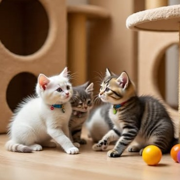

[Eventos] Encuentros del Destino: Adopciones Express
3 días aleatorios del mes, Michis abre sus puertas a un evento muy especial. En colaboración con refugios locales, organizamos jornadas de "Adopciones Express", donde pequeños corazones peludos aguardan la oportunidad de transformar una vida —la suya y la tuya, unidos por el destino.
No hay prisa ni presión. Solo tú, una deliciosa taza de café, tu postre preferido, y la posibilidad de que un pequeño felino te elija como su humano favorito. Porque a veces, el mejor amigo que podrías tener está a solo un ronroneo de distancia, esperando escribir contigo el primer capítulo de una hermosa historia juntos.
